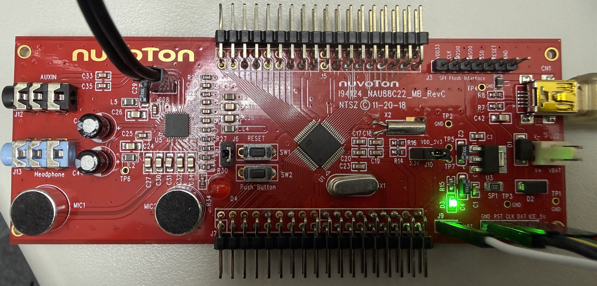
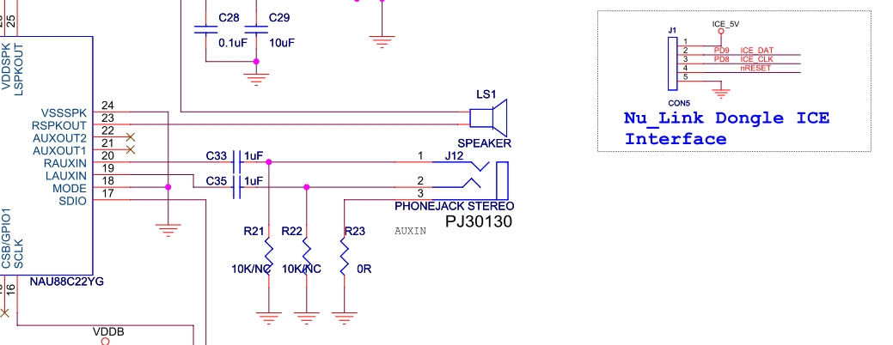
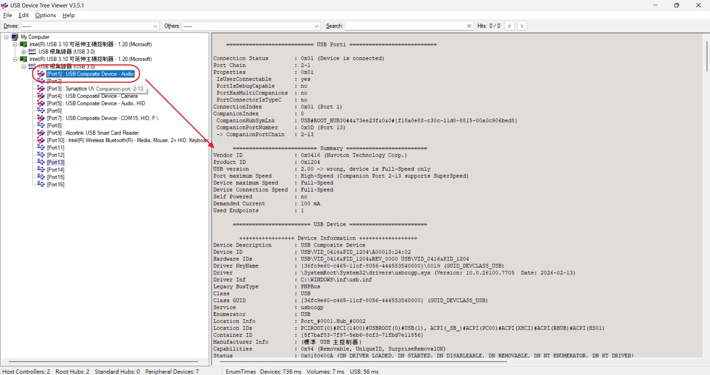
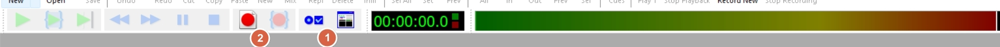
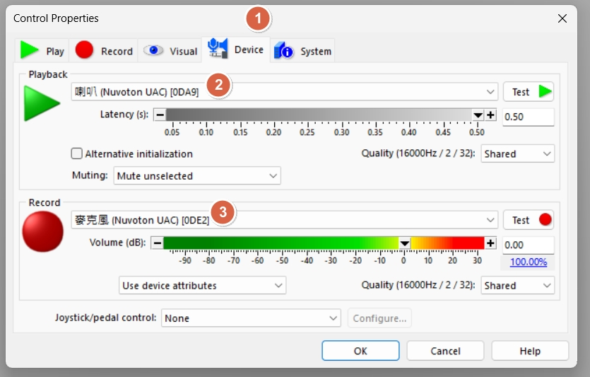
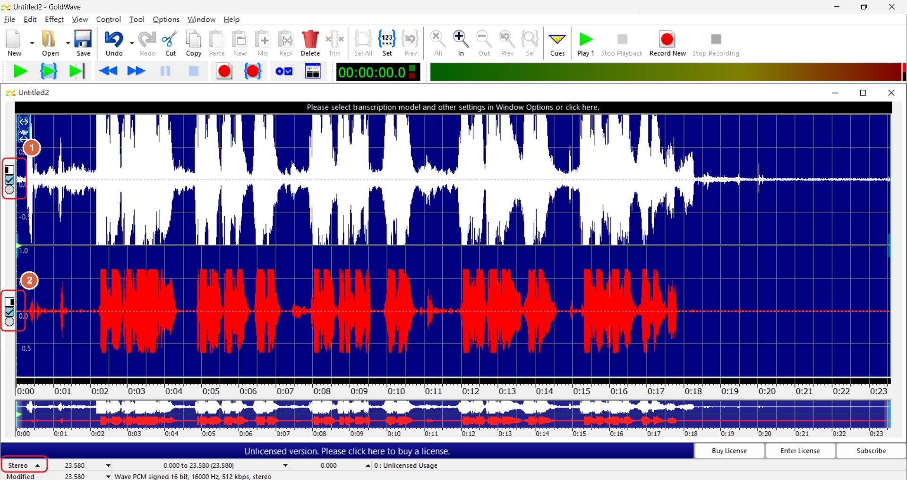
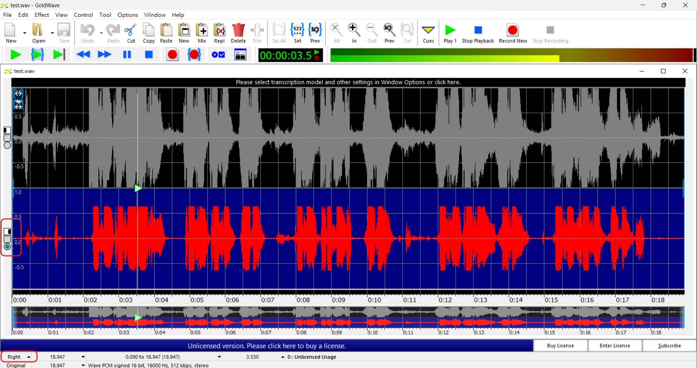

AEC / NR works correctly when EVB runs in USB UAC mode.AEC / NR supports MONO only).| Item | Value | Note |
|---|---|---|
| EVB | I94124_NAU88C22_MB_REVC |
Test board |
| FW | AEC / NR library + USB UAC enable | Firmware must enable the algorithm |
| Audio tool | GoldWave | Recording / playback / channel check |


Speaker Nuvoton UACMicrophone Nuvoton UACImportant
IfSpeakerandMicrophoneare not enumerated correctly, fix USB cable/driver/power issues first, then run AEC / NR tests.

In GoldWave, open Control related properties > Devices and set:
Playback Device : Speaker Nuvoton UACRecord Device : Microphone Nuvoton UACThis ensures both record and playback use the EVB audio path so AEC / NR behavior can be observed correctly.



| File | Content | Usage |
|---|---|---|
| test1.wav | Music (English) | Background-audio scenario |
| test2.wav | News broadcast | Speech-interference scenario |
| test3.wav | Music (Chinese) | Mixed-content scenario |
Stereo playback, background audio and voice can both be heard.AEC / NR supports MONO only), voice content should be dominant.
| Symptom | Possible cause | Action |
|---|---|---|
| No recorded audio | Wrong record device | Re-select Microphone Nuvoton UAC |
| No playback audio | Wrong playback device | Re-select Speaker Nuvoton UAC |
| Weak AEC effect | Far-end level too low / unstable mic distance | Increase background level and keep fixed mic distance |
| Listening result does not match expectation | Using Stereo result to judge MONO algorithm | Switch channel first, then compare |
Validation note
Keep test conditions fixed (volume, distance, noise source) to compare AEC / NR performance across firmware versions fairly.
MONO support limitation during playback analysis.AEC / NR 是否可正常運作。AEC / NR 僅支援 MONO）。| 項目 | 設定值 | 說明 |
|---|---|---|
| EVB | I94124_NAU88C22_MB_REVC |
測試板 |
| FW | AEC / NR library + USB UAC enable | 韌體需啟用演算法 |
| 音訊工具 | GoldWave | 錄音 / 回放 / 聲道檢查 |
Speaker Nuvoton UACMicrophone Nuvoton UACImportant
若Speaker與Microphone未正確列舉，請先排除 USB 線材、驅動與供電問題，再進行 AEC / NR 測試。
在 GoldWave 開啟 Control related properties > Devices，設定如下：
Playback Device : Speaker Nuvoton UACRecord Device : Microphone Nuvoton UAC此設定可確保錄音與回放都走 EVB 音訊路徑，才能正確觀察 AEC / NR 行為。
| 檔案 | 內容 | 用途 |
|---|---|---|
| test1.wav | 音樂（英文） | 背景音情境測試 |
| test2.wav | 新聞播報 | 語音干擾情境測試 |
| test3.wav | 音樂（中文） | 混合內容情境測試 |
Stereo 回放時，通常可同時聽到背景音與人聲。AEC / NR 僅支援 MONO），人聲會較為明顯。| 現象 | 可能原因 | 建議處理 |
|---|---|---|
| 錄不到聲音 | 錄音裝置選錯 | 重新選擇 Microphone Nuvoton UAC |
| 回放無聲 | 播放裝置選錯 | 重新選擇 Speaker Nuvoton UAC |
| AEC 效果不明顯 | far-end 音量太小 / 麥克風距離不穩定 | 提高背景音量並固定收音距離 |
| 聽感與預期不一致 | 用 Stereo 結果判讀 MONO 演算法 | 先切換聲道再比較 |
Validation note
請固定測試條件（音量、距離、噪音來源），以便公平比較不同韌體版本的 AEC / NR 表現。
MONO 支援限制，避免聲道誤判。